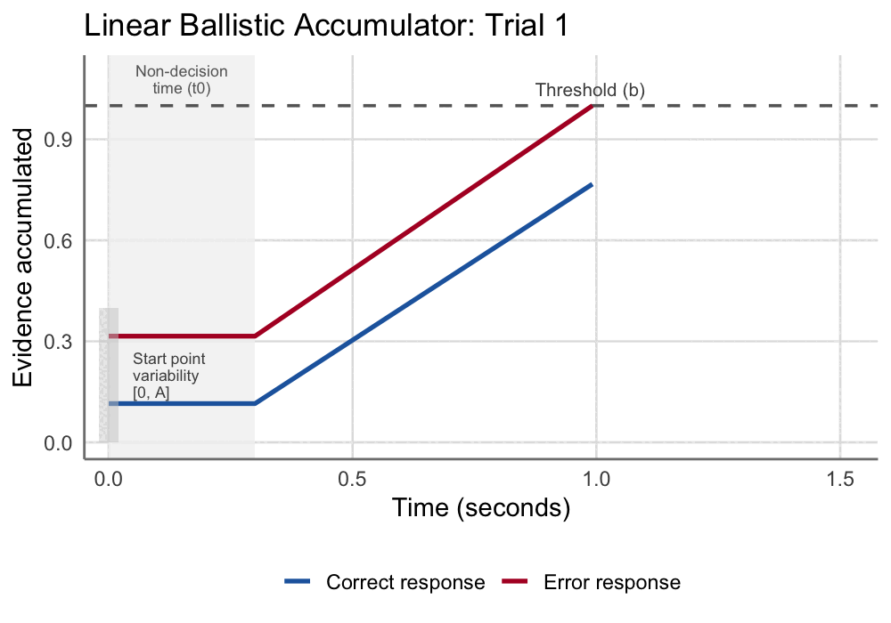

A Series on Building Formal Models of Classic Psychological Effects: Part 2, Implicit Attitudes—Are They Real?
Introduction
The Implicit Association Test (IAT) is perhaps one of the most influential—and controversial—measures in all of social psychology. Since its introduction by Greenwald et al. (1998), the IAT has been used to measure implicit attitudes across domains ranging from race and gender to political ideology and consumer preferences. The theory is that implicit attitudes are unconscious (and often automatic) evaluations, feelings, or beliefs that people have that influence behavior. The IAT then supposedly measures these implicit attitudes. For example, if you are faster to pair “Black faces” with “negative words” than with “positive words”, this reaction time difference reveals something about your underlying racial attitudes. Unlike survey questions where people may not be so willing to share their explicit attitudes, the IAT promises a more objective measure.
As of January 2026, the original paper has been cited over 19,000 times per Google Scholar, and millions of people have taken IATs that seek to measure implicit attitudes across a wide range of domains (see Project Implicit’s website). The IAT has been featured in countless news articles, incorporated into diversity trainings at major corporations, and even cited in legal proceedings. In many ways, the IAT represents a triumph of social psychology—a clever behavioral paradigm that promised to peer beneath the surface of self-report and reveal the objective attitudes people are unwilling or unable to articulate.
And yet…
The Validity Debate

Despite its popularity, the IAT has faced persistent criticism regarding its validity, and the debate continues to rage on today. In early 2024, the American Academy of Arts & Sciences published a special issue titled “Understanding Implicit Bias: Insights & Innovations”, featuring 18 articles and 35 authors in total. A skim through the articles themselves is telling—all discuss implicit attitudes (or biases) and impacts across American society, and many reify the IAT as the gold standard for measuring such implicit attitudes. In fact, I combed through every paper and only found a single example of authors even mentioning potential concerns with IAT measurement reliability:
This could be a lengthy discussion, but in sum, the majority of researchers agree that enough validity evidence has accrued to conclude that the IAT does, in fact, serve as a valid and reliable way to assess individual differences in evaluations of and stereotypes about social groups, though perhaps with a bit more noise than self-report measures. — Ratliff & Smith
For reasons that will become more clear once we start looking at actual IAT test-retest reliability in the following sections, Andrew Gelman rightfully calls out this apparent IAT sycophancy in his blog:
I was surprised that all 18 of the articles in this journal issue took the same position. Shouldn’t they have had a few saying, ‘Yeah, sure, implicit bias is a thing, it’s just not a thing that you should try to measure using the Implicit Association Test’? — Andrew Gelman
Despite what the special issue may imply, Ulrich Schimmack (perhaps the IAT’s most persistent academic critic?) sets the story straight on his Replicability-Index blog, making it clear to the casual observer that the wider psychology community does not have a unified view on the IAT as a valid measure of implicit bias:
IAT researchers continue to conflate performance on an Implicit Association Test with measurement of implicit biases, although the wider community has rejected this view. — Ulrich Schimmack
What makes this controversy even more interesting is that it has broken out of academic circles, entering the sphere of public policy debates. For example, critics have characterized the entire implicit bias research program as “a house of cards” built on junk science—citing the IAT’s poor test-retest reliability, weak correlations with actual behavior, and the broader replication crisis in behavioral priming research as indicators of a failed research paradigm.
To be clear, this blog post is not about the policy implications of IAT research or whether implicit bias trainings “work”. Those are interesting questions, but they are downstream of a much more fundamental methodological question:
What is the relationship between implicit attitudes (as measured by the IAT) and explicit attitudes (as measured by self-report)? — Me, in this blog
If both measures tap into the same underlying attitude construct, we would expect them to be highly correlated. If they measure distinct constructs (implicit vs explicit) we would expect a weaker relationship. The empirical answer has been rather consistent—a series of meta-analyses have found that the observed correlation between IAT scores and explicit self-report measures hovers around r ≈ .2 (Hofmann et al., 2005; Greenwald et al., 2009). This modest correlation has been used to argue that implicit and explicit attitudes are indeed separate constructs. In other words, weak implicit-explicit correlations are used as evidence that the IAT has discriminant validity, or captures something fundamentally different from what people consciously report.
The Measurement Error Problem (see meme above)
As we explored in a previous post on the Reliability Paradox, low observed correlations can arise for reasons having nothing to do with the underlying psychological constructs. Specifically, measurement error attenuates correlations. If both the IAT and self-report measures are noisy indicators of their respective latent constructs, the observed correlation between them will be lower than the true correlation between the constructs themselves. Measurement error is perhaps the most important factor to account for when making inference on discriminant validity, otherwise the test is a straw man.
This is not a new insight! Psychologists have been talking about correlation attenuation since the early 1900’s, and we have had corrections for it since then too (check out another previous post for some fun history). Indeed, Cunningham et al. (2001) demonstrated decades ago that when you model composite IAT scores and explicit measures using structural equation modeling (SEM)—thereby accounting for measurement error—the latent correlation jumps to somewhere around r ≈ .45. Schimmack (2021) has pushed this argument even further, showing that once you partition out method variance across tasks (again using SEM), latent implicit-explicit correlations leap to around r ≈ .8—suggesting they may be tapping into the same underlying construct after all.
If true, this would fundamentally reshape how we think about the IAT. Rather than measuring a distinct “implicit” attitude system, the IAT might simply be a more noisy measure of the same attitudes people explicitly self-report. This view has some strong evidential support. For example, despite IAT D-scores (more on these later) consistently capturing group-level differences, test-retest correlations hover around r ≈ .4 across versions and timepoints (Gawronski et al., 2017)—far below the .7–.8 threshold typically considered acceptable for individual-differences research. This “reliability paradox”—wherein robust group-level effects fail to capture stable individual differences—has plagued not just the IAT but behavioral tasks more broadly (Hedge et al., 2018).
Of course, you (an avid reader of my blog :D) already know why this is an issue. All the correlations described above—whether used in the context of discriminant validity, test-retest reliability, or some other important *-ity—are derived from summary statistics like the D-score, which collapse hundreds of trial-level responses into a single number per person. In previous work, my colleagues and I showed that this approach systematically underestimates reliability because it ignores the measurement error inherent in summarizing noisy trial-level data. When we instead fit generative models that respect the trial-level data-generating process—using hierarchical Bayesian methods to pool information across participants while accounting for within-person variability—test-retest reliability estimates on the actual underlying constructs of interest increase substantially across multiple tasks, including the IAT.
The implication here is that Cunningham and Schimmack are likely right, at least directionally. To make claims about discriminant validity, we need to estimate the correlation between latent implicit-explicit constructs, not between the observed scores that are diluted by measurement error. After all, we don’t actually care about the observed scores—we want to understand the underlying constructs that they supposedly represent.
A Different Approach: Joint Generative Modeling
Rather than relying on summary statistics that throw away information and then arguing about whether the resulting correlations are “real” or attenuated by measurement error, we can build a joint generative model that simultaneously accounts for measurement error in both the IAT and explicit measures.
Currently, researchers tend to take one of two paths:
SEM/latent variable approaches: Fit measurement models to summary scores across a battery of implicit and explicit measures (e.g., D-scores for multiple IATs, scale means for multiple self-reports), partition out shared implicit and explicit factors, and estimate latent correlations between the resulting factors..
Process model approaches: Fit cognitive models like the Diffusion Decision Model to trial-level IAT data (reaction times and accuracy), extract model parameters, and then correlate these parameters with explicit measures in a separate analysis.
Neither approach is fully satisfying. The SEM approach focuses on D-scores, which conflate various cognitive processes in such a way that make it challenging to extract signal on the true latent implicit attitude we care about. There are hundreds of reaction times and accuracy indicators per person that are ignored when we callapse information down into a noisy summary score. Conversely, the process model approach uses this trial-level data (which is great!), but treats the relationship between implicit and explicit as an afterthought rather than something to be estimated jointly. The result is that we still end up correlating summary scores to make inference, which are of course attenuated my measurement error dependent on how (im)precise the estimates are.
What we need is a joint generative model—one that simultaneously fits a process model to IAT trial-level responses (RTs and accuracy) and a factor model to explicit item-level responses. By modeling trial- and item-level information simultaneously, we can capture the true correlation between latent implicit and explicit attitudes (we will call this ρ).
In this post, we will develop competing generative models to answer the question: Are implicit and explicit attitudes the same construct or different constructs?
Along the way, we will see how thinking generatively—specifying the data-generating process from latent constructs down to observed responses—can help resolve debates that have persisted for decades using traditional descriptive approaches.
Alright, time to do some modeling!
Three Competing Hypotheses
To begin, let’s first clarify the core assumptions each of our models will make regarding implicit vs explicit latent attitude constructs:
| Model | Hypothesis | ρ Value | Theoretical Position |
|---|---|---|---|
| Model 1 | Single Construct | ρ = 1 (fixed) | Schimmack’s view: IAT and self-report measure the same attitude with different noise |
| Model 2 | Correlated Constructs | ρ estimated | Agnostic: Let the data tell us how strongly implicit and explicit relate |
| Model 3 | Independent Constructs | ρ = 0 (fixed) | Strong dual-attitude theory: Implicit and explicit are completely separate systems |
You may have noticed that Models 1 and 3 are nested within Model 2. If Model 1 fits the data as well as Model 2, then by parsimony we should prefer the simpler single-construct explanation. Why posit two separate attitude systems when one will do? If Model 2 fits substantially better with an estimated ρ << 1, that’s evidence for genuinely distinct constructs (real discriminant validity!). If Model 3 fits best, we would have evidence for a genuine, strong distinction between implicit and explicit systems.
Next, we need to explicate the data generating process that explains how latent attitudes produce observed data, both in the context of IAT trial-level responses (RTs and accuracy) and explicit item-level responses (e.g., Likert or feeling thermometer ratings). We will get into the details of the dataset later, but for now you just need to know that our model of explicit responses will need to account for both Likert responses and continuous feeling thermometer responses.
Modeling the IAT: The Linear Ballistic Accumulator
For the IAT, we need a model that can account for both reaction times and accuracy at the trial level. When someone sees a stimulus (a face or a word) in the IAT, they have to categorize it as quickly as possible by pressing a left or right key. How do we model this process?
There are a wide range of models we could leverage for this, but here we will use the Linear Ballistic Accumulator (LBA; Brown & Heathcote, 2008), a model of multi-choice decision making. The basic idea is that multiple “accumulators”—one for each response option—race toward a threshold, and whichever accumulator crosses the threshold first determines the response. The winning response determines accuracy, and the time it takes to win determines response time.
How the LBA Works
The gif below demonstrates how the LBA works from trial-to-trial:

Each accumulator:
- Starts from a random point uniformly distributed between 0 and A
- Accumulates evidence at a drift rate d, drawn from a normal distribution at the start of each trial
- The first accumulator to reach threshold b wins the race and triggers that response
- Total RT = accumulation time + non-decision time (t0) for perceptual encoding and motor execution
Each parameter has a clear psychological interpretation:
- Drift rate (d): How quickly evidence accumulates—higher drift means faster, more confident responding
- Threshold (b): Response caution—higher thresholds mean slower but more accurate responses
- Start point variability (A): Trial-to-trial noise in where accumulation begins
- Non-decision time (t0): Time for stimulus encoding and motor execution
We won’t get into it in too much detail here, but the LBA can capture distinct decision making processes that the D-score alone would otherwise conflate. My favorite example is speed-accuracy tradeoffs. For example, think of what would happen to accuracy and response time if you hold all parameters constant but decrease the threshold parameter (b). Watching the gif, the first thing that comes to mind is that you would expect faster response times. But if you watch a few examples, you will notice something else—occasionally, the “correct” process starts lower than the “error” process, yet it has a steeper slope. If the threshold is high enough, the correct process is able to overtake the error process, resulting in a correct response. If it were lower, the correct process may not have enough time to overtake the error process, resulting in an error response.
What is cool about the above tradeoff is that the LBA captures this rather complex speed-accuracy tradeoff through just the single threshold (b) parameter. Studies have also demonstrated that you can incentivise people to respond faster, and generally we see a drop in their threshold parameters when doing so. There are some other cool effects that the LBA (and other evidence accumulation models) can capture, and I encourage interested readers to check out the LBA paper linked above to learn more.
Linking Attitudes to Drift Rates
Alright, with our IAT process model decided, we now need to decide on how to link latent racial attitudes to the LBA. As detailed above, the LBA has multiple parameters that we could link implicit attitudes to, but the most sensible parameter to link to would be the drift rate. Drift rates are meant to capture the actual evidence accumulation process that occurs when a person makes a decision, resulting in the observed response on each trial. In theory, the attitudes underlying the IAT should directly influence this accumulation process (e.g., accelerating it when response stimuli are compatible, and dampening it when incompatible). Therefore, we will set up the model such that the latent attitude θ directly modulates how quickly evidence accumulates toward the correct vs. incorrect response in each condition.
For intuition, imagine someone with a strong pro-White racial attitude (high θ) doing the race IAT. In the compatible condition (Black+Bad / White+Good pairing), their attitude helps them—evidence accumulates more quickly for the correct response because the pairings align with their attitude. In the incompatible condition (Black+Good / White+Bad), their attitude hurts them—evidence accumulates more slowly because the pairings conflict with their attitude.
Formally, for trial j of participant i:
\[ \begin{align} d_{correct,ij} &= d_0 + \lambda_{IAT} \cdot \theta_i \cdot \text{condition}_{ij} \\ d_{error,ij} &= d_0 - \lambda_{IAT} \cdot \theta_i \cdot \text{condition}_{ij} \end{align} \]
Where condition = +1 for compatible blocks and −1 for incompatible blocks. The key parameters:
- θᵢ: Participant i’s latent racial attitude (higher = stronger pro-White/anti-Black bias)
- d₀: Baseline drift rate (general processing speed, independent of attitude)
- λᵢₐₜ: The “attitude loading”—how much racial attitude affects IAT drift rates
One thing to note here is that we are not computing a difference score between conditions. The traditional IAT D-score computes (mean RT incompatible − mean RT compatible), which compounds measurement error from both conditions. Instead, our model says that the latent attitude θ affects drift rates within each condition on every trial, and the IAT effect emerges naturally from the model. This parameterization follows the insight from Kvam et al. (2024), avoiding the “compound error problem” that plagues difference scores.
Modeling Self-reported Attitudes: Item Response Theory
For the explicit measures, in the dataset we will use below, participants answered five items about their racial attitudes: preference ratings, liking ratings for each group, and feeling thermometers. The traditional approach would be to average these items into a single score, but as we have covered before, this approach throws away useful information and introduces measurement error.
Instead, we will model each item response as a function of the latent attitude θ, using different Item Response Theory (IRT) based measurement models appropriate for each item type.
Categorical Items: Ordered Logistic
For Likert items with discrete categories (preference: “I strongly prefer White people” to “I strongly prefer Black people”, and liking ratings on 1-7 scales), we will use an ordered logistic model:
\[ P(Y_{ik} \geq c) = \frac{1}{1 + \exp(-(\alpha_k \cdot \theta_i - \tau_{kc}))} \]
where:
- Yᵢₖ is the response of person i to item k
- αₖ: The discrimination parameter—how well item k differentiates people with different attitudes
- τₖc: An intercept term for category c—higher values mean higher attitude is needed to endorse that category or above
Note that we are using a regression parameterization here because it makes it easier to code up in Stan, but the model above is identical to the graded response model—a popular model of ordinal survey data from Item Response Theory (for a nice overview on various IRT models, see Luo & Jiao, 2017). Specifically, we can convert the τ intercept parameter in our regression version to the IRT “difficulty” parameter per β = τ/α, which instead gives the (mathematically idential) model:
\[ P(Y_{ik} \geq c) = \frac{1}{1 + \exp(-\alpha_k(\theta_i - \beta_{kc}))} \] I find the IRT formulation here a bit more intuitive—a person becomes more likely to respond to a given category as their latent attitude θ becomes greater than the item category threshold β. In fact, from a generative perspective, you can imagine a latent continuous preference y* = α·θ that gets discretized by the β difficulty thresholds. The probability of a person endorsing each response category is then just the relative portion of the latent preference distribution between consecutive cutpoints:
Click to show visualization code
library(tidyverse)
library(patchwork)
library(ggtext)
# Function to compute category probabilities from ordered logistic
# Uses IRT parameterization: alpha*(theta - beta)
compute_cat_probs <- function(theta, alpha, beta) {
prob_geq <- plogis(alpha * (theta - beta))
prob_geq_all <- c(1, prob_geq, 0)
cat_probs <- -diff(prob_geq_all)
return(cat_probs)
}
# Set up difficulty parameters for a 7-point scale
beta <- c(-3.7, -1.9, -0.69, 0.69, 1.9, 3.7)
# Function to create a two-panel plot: latent density + response bars
create_panel <- function(theta, alpha, beta, title, show_y_labels = TRUE) {
# Compute response probabilities
probs <- compute_cat_probs(theta, alpha, beta)
# The latent variable is: y* = alpha*theta + epsilon, where epsilon ~ Logistic(0, 1)
# Equivalently: y*/alpha = theta + epsilon/alpha, where epsilon/alpha ~ Logistic(0, 1/alpha)
# The thresholds beta are fixed; alpha changes the scale of the distribution
latent_mean <- theta
latent_scale <- 1 / alpha
thresholds <- beta
# Top plot: latent logistic density with threshold lines
p_density <- data.frame(x = seq(-6, 6, length.out = 1000)) %>%
mutate(y = dlogis(x, location = latent_mean, scale = latent_scale)) %>%
ggplot(aes(x = x, y = y)) +
geom_area(fill = "#eb3437", alpha = 0.7) +
geom_vline(xintercept = thresholds, linetype = 2, color = "gray30", linewidth = 0.5) +
labs(title = title,
x = NULL,
y = if(show_y_labels) "Density" else NULL) +
scale_x_continuous(limits = c(-6, 6), breaks = seq(-6, 6, 2)) +
theme_minimal(base_size = 15) +
theme(panel.grid = element_blank(),
axis.text.y = element_blank(),
plot.title = element_textbox_simple(
hjust = 0.5,
halign = 0.5,
face = "bold",
fill = "gray90",
box.color = "gray60",
padding = margin(3, 3, 3, 3),
margin = margin(0, 0, 3, 0)
))
# Bottom plot: discrete response probabilities
p_bars <- data.frame(
category = 1:7,
probability = probs
) %>%
ggplot(aes(x = category, y = probability)) +
geom_col(fill = "#eb3437", alpha = 0.7) +
geom_text(aes(label = sprintf("%.2f", probability)),
vjust = -0.5, size = 3.5) +
labs(x = NULL,
y = if(show_y_labels) "Probability" else NULL) +
scale_x_continuous(breaks = 1:7,
labels = c("1\nPro-\nBlack", "2", "3", "4\nNeutral",
"5", "6", "7\nPro-\nWhite")) +
ylim(0, 0.8) +
theme_minimal(base_size = 15) +
theme(panel.grid.major.x = element_blank(),
axis.text.x = element_text(size = 12),
axis.text.y = if(!show_y_labels) element_blank() else element_text())
# Stack vertically
p_density / p_bars + plot_layout(heights = c(1, 1.2))
}
# Create 3x3 grid: columns = theta (increasing L to R), rows = alpha (increasing top to bottom)
# Using Unicode Greek letters: θ = \u03B8, α = \u03B1
# Only show y-axis labels on column 1 (leftmost)
# Row 1: alpha = 0.5
p11 <- create_panel(-1.5, 0.5, beta, "\u03B8 = -1.5, \u03B1 = 0.5", show_y_labels = TRUE)
p21 <- create_panel(0, 0.5, beta, "\u03B8 = 0, \u03B1 = 0.5", show_y_labels = FALSE)
p31 <- create_panel(1.5, 0.5, beta, "\u03B8 = 1.5, \u03B1 = 0.5", show_y_labels = FALSE)
# Row 2: alpha = 1
p12 <- create_panel(-1.5, 1, beta, "\u03B8 = -1.5, \u03B1 = 1", show_y_labels = TRUE)
p22 <- create_panel(0, 1, beta, "\u03B8 = 0, \u03B1 = 1", show_y_labels = FALSE)
p32 <- create_panel(1.5, 1, beta, "\u03B8 = 1.5, \u03B1 = 1", show_y_labels = FALSE)
# Row 3: alpha = 2
p13 <- create_panel(-1.5, 2, beta, "\u03B8 = -1.5, \u03B1 = 2", show_y_labels = TRUE)
p23 <- create_panel(0, 2, beta, "\u03B8 = 0, \u03B1 = 2", show_y_labels = FALSE)
p33 <- create_panel(1.5, 2, beta, "\u03B8 = 1.5, \u03B1 = 2", show_y_labels = FALSE)
# Arrange in 3x3 grid
irt_plot <- (p11 | p21 | p31) / (p12 | p22 | p32) / (p13 | p23 | p33)
In the plot, columns represent different attitudes (θ) and rows represent different discrimination levels (α). Each panel contains two subplots: the latent continuous response (top) with a logistic distribution, and the observed discrete response probabilities (bottom). Gray dashed lines show the fixed thresholds β that discretize the latent variable into 7 response categories.
As attitude θ increases from -1.5 (pro-Black) through 0 (neutral) to 1.5 (pro-White), the latent distribution shifts rightward. The thresholds stay fixed, but as the distribution moves, response probabilities shift from lower response categories (pro-Black) to higher categories (pro-White).
As discrimination α increases from 0.5 (top) to 2 (bottom), the latent distribution becomes narrower and more peaked. Higher discrimination means the item measures attitudes more precisely—responses concentrate around the center of the latent preference distribution rather than spreading across categories.
Continuous Items: Probit-Transformed Normal
For feeling thermometer items (rated from -100 to 100), we have continuous responses that are bounded at either end. Rather than artificially discretizing these into Likert categories (don’t worry I tried this and results were basically the same), we use a probit-transformed normal model. This is a bit non-standard, but I went this way because: (1) I thought it would be fun, and (2) the structure of the model matches our categorical version quite nicely.
For the continuous model, we first scale the thermometer responses to [0,1]:
\[y_{ik}^* = \frac{y_{ik} + 100}{200}\]
Then we apply the inverse normal CDF (probit transformation) to map [0,1] → ℝ, and model the transformed value:
\[ \Phi^{-1}(y_{ik}^*) \sim \text{Normal}(\tau_k + \lambda_k \cdot \theta_i, 1) \]
Where:
- λₖ: The factor loading—analogous to discrimination in IRT
- τₖ: The intercept—average thermometer rating when θ = 0
- σ = 1: Residual standard deviation—fixed for identification (similar to the ordered logistic’s implicit fixed variance)
This approach treats thermometer ratings as if they arose from an underlying continuous normal variable that gets “squashed” through the normal CDF to get bounded in [0,1], and then we just map back from [0,1] to [-100,100] post-hoc (by running backwards through the scaling transform above) to get back real thermometer values. This model is symmetric with the ordered logistic model: both assume an underlying continuous latent response, but one is discretized (Likert) while the other is observed continuously (thermometer).
To make the model behavior more intuitive, the plot below shows how θ (attitude) and λ^std (standardized loading—we will get more into standardized loadings below) determine the distribution of observed thermometer ratings:
Click to show visualization code
library(tidyverse)
library(patchwork)
library(ggtext)
# Helper function to derive sigma from standardized loading
# In parameterization: z = tau + lambda * theta + epsilon, epsilon ~ N(0, sigma^2)
# Standardized loading: lambda_std = lambda^2 / sqrt(lambda^2 + sigma^2)
# Solving for sigma: sigma = sqrt((lambda^2 - lambda_std^2) / lambda_std^2)
# you can either set lambda = 1 or sigma = 1 for identification,
# for viz we will set lambda = 1 to more easily show the noise
# reduction in the latent variable as lambda_std increases
std_to_sigma <- function(lambda_std) {
sqrt((1 - lambda_std^2) / lambda_std^2)
}
# Function to create a two-panel plot: latent density + observed density
create_continuous_panel <- function(theta, lambda_std, tau = 0, title, show_y_labels = TRUE) {
# Use alternative parameterization: lambda = 1, estimate sigma
lambda <- 1
sigma <- std_to_sigma(lambda_std)
# Latent variable: z ~ N(tau + lambda*theta, sigma^2)
latent_mean <- tau + lambda * theta
latent_sd <- sigma
# Top plot: latent normal density
z_vals <- seq(-6, 6, length.out = 1000)
latent_data <- data.frame(z = z_vals) %>%
mutate(density = dnorm(z, mean = latent_mean, sd = latent_sd))
p_latent <- ggplot(latent_data, aes(x = z, y = density)) +
geom_area(fill = "#eb3437", alpha = 0.7) +
labs(title = title,
x = NULL,
y = if(show_y_labels) "Density" else NULL) +
scale_x_continuous(limits = c(-6, 6), breaks = seq(-6, 6, 2)) +
theme_minimal(base_size = 15) +
theme(panel.grid = element_blank(),
axis.text.y = element_blank(),
plot.title = element_textbox_simple(
hjust = 0.5,
halign = 0.5,
face = "bold",
fill = "gray90",
box.color = "gray60",
padding = margin(3, 3, 3, 3),
margin = margin(0, 0, 3, 0)
))
# Bottom plot: observed distribution after probit transformation
# y = Phi(z), so density of y is: f_y(y) = phi(Phi^(-1)(y) - mu) where mu = latent_mean
y_vals <- seq(0.001, 0.999, length.out = 1000)
observed_data <- data.frame(y = y_vals) %>%
mutate(
z_inv = qnorm(y), # Phi^(-1)(y)
density = dnorm(z_inv, mean = latent_mean, sd = latent_sd)
)
p_observed <- ggplot(observed_data, aes(x = y, y = density)) +
geom_area(fill = "#eb3437", alpha = 0.7) +
labs(x = NULL,
y = if(show_y_labels) "Density" else NULL) +
scale_x_continuous(breaks = seq(0, 1, 0.2),
labels = c("-100\nPro-\nBlack", "-60", "-20", "20", "60", "100\nPro-\nWhite")) +
theme_minimal(base_size = 15) +
theme(panel.grid.major.x = element_blank(),
axis.text.x = element_text(size = 12),
axis.text.y = if(!show_y_labels) element_blank() else element_text())
# Stack vertically
p_latent / p_observed + plot_layout(heights = c(1, 1.2))
}
# Create 3x3 grid: columns = theta (increasing L to R), rows = lambda_std (increasing top to bottom)
# Using Unicode Greek letters: θ = \u03B8, λ = \u03BB
# Using standardized loadings: 0.25, 0.75, 0.95 (weak, moderate, strong)
# Only show y-axis labels on column 1 (leftmost)
# tau = 0 for all panels
# Row 1: lambda_std = 0.25
p11 <- create_continuous_panel(-1.5, 0.25, tau = 0, title = "\u03B8 = -1.5, \u03BB\u02E2\u1D57\u1D48 = 0.25", show_y_labels = TRUE)
p21 <- create_continuous_panel(0, 0.25, tau = 0, title = "\u03B8 = 0, \u03BB\u02E2\u1D57\u1D48 = 0.25", show_y_labels = FALSE)
p31 <- create_continuous_panel(1.5, 0.25, tau = 0, title = "\u03B8 = 1.5, \u03BB\u02E2\u1D57\u1D48 = 0.25", show_y_labels = FALSE)
# Row 2: lambda_std = 0.75
p12 <- create_continuous_panel(-1.5, 0.75, tau = 0, title = "\u03B8 = -1.5, \u03BB\u02E2\u1D57\u1D48 = 0.75", show_y_labels = TRUE)
p22 <- create_continuous_panel(0, 0.75, tau = 0, title = "\u03B8 = 0, \u03BB\u02E2\u1D57\u1D48 = 0.75", show_y_labels = FALSE)
p32 <- create_continuous_panel(1.5, 0.75, tau = 0, title = "\u03B8 = 1.5, \u03BB\u02E2\u1D57\u1D48 = 0.75", show_y_labels = FALSE)
# Row 3: lambda_std = 0.95
p13 <- create_continuous_panel(-1.5, .95, tau = 0, title = "\u03B8 = -1.5, \u03BB\u02E2\u1D57\u1D48 = 0.95", show_y_labels = TRUE)
p23 <- create_continuous_panel(0, .95, tau = 0, title = "\u03B8 = 0, \u03BB\u02E2\u1D57\u1D48 = 0.95", show_y_labels = FALSE)
p33 <- create_continuous_panel(1.5, .95, tau = 0, title = "\u03B8 = 1.5, \u03BB\u02E2\u1D57\u1D48 = 0.95", show_y_labels = FALSE)
# Arrange in 3x3 grid
cont_plot <- (p11 | p21 | p31) / (p12 | p22 | p32) / (p13 | p23 | p33)
The figure shows a 3×3 grid where columns represent different attitudes (θ) and rows represent different standardized factor loadings (λstd). Each panel contains two subplots: the latent continuous variable z (top) with a normal distribution, and the observed thermometer rating y (bottom) after the probit transformation plus rescaling y = Φ(z)·200-100.
As attitude θ increases from -1.5 (pro-Black) through 0 (neutral) to 1.5 (pro-White), the latent distribution shifts rightward. After the probit transformation, this shift translates to higher observed thermometer ratings—probability mass moves toward the pro-White end of the scale.
As the standardized loading increases from 0.25 (weak) through 0.75 (good) to 0.95 (excellent), the observed distribution becomes dramatically more concentrated. At λstd = 0.25 (top row), the observed distributions are nearly flat—only about 6% of variance is signal, so the thermometer provides almost no information about the person’s true attitude. You can barely distinguish someone with strong pro-Black attitudes (θ = -1.5) from someone with strong pro-White attitudes (θ = 1.5) based on their thermometer rating alone. At λstd = 0.95 (bottom row), about 90% of variance is signal, and the distributions are tightly peaked—now the thermometer clearly differentiates attitudes.
Putting It Together: The Three Models
We now have all the pieces. The LBA links latent attitudes to trial-level RTs and accuracy; the IRT models link latent attitudes to item-level responses. As alluded to at the start, our three competing hypotheses regarding implicit-explicit attitude correlations can then be instantiated by making different assumptions about how the θ parameters from our IAT/IRT models arise.
Model 1: Single Construct (ρ = 1)
Model 1 assumes that a single latent attitude θ generates both IAT and self-report responses:
\[\theta_i \sim \text{Normal}(0, 1)\]
The same θᵢ enters both the LBA drift rate equation (for IAT) and the IRT equations (for self-report items). This model assumes that if you have a pro-White attitude, that same attitude makes you both faster in the compatible IAT condition and more likely to report preferring White people explicitly.
Model 3: Independent Constructs (ρ = 0)
Model 3 assumes the same structure as Model 2, but we fix ρ to 0. This is the strong dual-attitude theory.
Standardized Loadings: Comparing Measurement Quality
To compare how well the IAT and self-report items measure their underlying constructs, we need a common metric. Each measurement component (IAT, categorical items, continuous items) has different parameters on different scales, so we’ll transform them into standardized factor loadings—the correlation between the indicator and the latent construct.
The Factor Analysis Foundation
In standard confirmatory factor analysis, we model an observed indicator y as:
\[y = \tau + \lambda \cdot \theta + \varepsilon\]
Where:
- τ: The intercept (mean of y when θ = 0)
- λ: The unstandardized factor loading (regression slope)
- θ: The latent factor (usually standardized so Var(θ) = 1)
- ε: Residual error, independent of θ
The variance of the observed indicator is:
\[\text{Var}(y) = \lambda^2 \cdot \text{Var}(\theta) + \text{Var}(\varepsilon) = \lambda^2 + \text{Var}(\varepsilon)\]
(assuming Var(θ) = 1). The standardized factor loading is the correlation between y and θ:
\[\lambda^{std} = \text{Cor}(y, \theta) = \frac{\text{Cov}(y, \theta)}{\sqrt{\text{Var}(y) \cdot \text{Var}(\theta)}} = \frac{\lambda}{\sqrt{\lambda^2 + \text{Var}(\varepsilon)}}\]
This has a clear interpretation: the standardized loading is the unstandardized loading divided by the square root of the total variance. Squaring it gives the proportion of variance in y explained by θ: (λstd)² = λ² / (λ² + Var(ε)).
Our three measurement types all follow this basic structure, but with different error variance structures and parameterizations. The deep dive section below gets into (excruciating) detail on how we derive the standardized loading transformation for each model. This part is optional if you are anxious to get into the data—feel free to skip ahead!
Click for the factor loading deep dive
Continuous Items: Probit-Transformed Normal
For the thermometer items, we model the probit-transformed response as:
\[\Phi^{-1}(y_{ik}^*) \sim \text{Normal}(\tau_k + \lambda_k \cdot \theta_i, 1)\]
This is exactly the standard factor analysis model, with the residual variance fixed at σ² = 1 for identification. Just like in CFA where we either fix the factor variance or fix one loading to identify the scale, we fix the residual variance here. The total variance of the latent response is:
\[\text{Var}(\Phi^{-1}(y_{ik}^*)) = \lambda_k^2 + 1\]
So the standardized loading is:
\[\lambda_{cont,k}^{std} = \frac{\lambda_k}{\sqrt{\lambda_k^2 + 1}}\]
Interpretation: This is literally the correlation between the probit-transformed thermometer rating and the latent attitude. If λcont = 1, then λstd = 1/√2 ≈ 0.71, meaning 50% of variance is explained by attitude.
Categorical Items: Ordered Logistic with Probit Scaling
The ordered logistic model is:
\[P(Y_{ik} \leq c) = \text{logit}^{-1}(\tau_{kc} - \alpha_k \cdot \theta_i)\]
This can be written as an underlying latent variable model: there exists an unobserved continuous variable y* such that:
\[y_{ik}^* = \alpha_k \cdot \theta_i + \epsilon_{ik}\]
where εik follows a standard logistic distribution, and we observe Yik = c when τk,c-1 < y* ≤ τkc.
Note that our continuous items use the normal (probit) scale, but ordered logistic uses the logistic scale. To make them comparable, we need to convert the logistic model to an equivalent probit scale.
The logistic and normal CDFs are very similar in shape, differing primarily in tail behavior. A scaling factor S = 1.7 does a reasonable job of minimizing the difference between a standard normal vs standard logistic distribution (there are better approximations, but it’s not like we are doing rocket science here). You can see the scaling effect visually by comparing the pre- vs post-scaled cumulative distribution functions:

The implication for us is that, if we rescale the discriminability parameters in our logistic model by the same S = 1.7 factor, we get the standardized loading parameters back on an approximately normal scale (i.e. the same scale as in a traditional factor analysis). We then use the same general formula as described above to standardize the resulting loadings, altogether giving:
\[\lambda_{cat,k}^{std} = \frac{\alpha_k / S}{\sqrt{(\alpha_k / S)^2 + 1}} = \frac{\alpha_k / 1.7}{\sqrt{(\alpha_k / 1.7)^2 + 1}}\]
IAT Standardized Loading: Baseline Speed vs. Attitude Variance
The IAT differs fundamentally from the explicit items in its error structure. In the LBA model, the drift rate for condition c, participant i is:
\[v_{c,i} = d_{0,i} + \lambda_{IAT} \cdot \theta_i \cdot c\]
where c ∈ {-1, +1} indexes compatible vs. incompatible conditions.
Crucially, there is no additive error term on the drift rates themselves. Unlike the explicit items where we have y = τ + λ·θ + ε, the drift rates don’t have a residual component. Trial-level variability in RTs and accuracy is handled by the LBA accumulation process—the stochastic diffusion to threshold—not by random noise on drift rates.
So where does variance in drift rates come from? Looking at the equation above, for a fixed condition c, the drift rate vc,i varies across people due to:
- Baseline drift rates d0,i: individual differences in general processing speed on the IAT task
- Attitude effects θi: individual differences in attitudes
Note that d₀ is person-specific, not block-specific. It captures the fact that some people are generally faster at the IAT task than others, independent of their attitudes. Person A might have faster overall processing than Person B, but both could have the same attitude (and thus the same λ·θ contribution to drift rates).
From a factor analysis perspective, if we think of “drift rate in condition c” as our indicator, its total variance across people is:
\[\text{Var}(v_{c,i}) = \text{Var}(d_{0,i}) + \lambda_{IAT}^2 \cdot \text{Var}(\theta_i) \cdot c^2 = \text{Var}(d_0) + \lambda_{IAT}^2\]
(since Var(θ) = 1 and c² = 1). The covariance between drift rates and attitudes is:
\[\text{Cov}(v_{c,i}, \theta_i) = \lambda_{IAT} \cdot c\]
So for compatible blocks (c = 1), the standardized loading is:
\[\lambda_{IAT}^{std} = \frac{\lambda_{IAT}}{\sqrt{\text{Var}(d_0) + \lambda_{IAT}^2}}\]
It is worth emphasizing a difference in how we are calculating standardized loadings here vs for the self-report models. For the self-reports, we have person-level responses with measurement error: each person gives one response per item, and there’s leftover variance not explained by θ. But in the IAT, we have trial-level responses (individual RTs and choices) that are governed by the LBA process. The drift rate is a parameter of that process, not a noisy observation. Variance at the trial level (why this particular trial was fast/slow) is captured by the accumulation dynamics, not by an error term on the drift rate.
Var(d₀) plays an analogous role to residual variance: it represents individual differences in the measure that don’t reflect the construct of interest (attitudes). If Var(d₀) is large relative to λ²IAT, it means that individual differences in general processing speed create more variance in drift rates than attitude differences do, resulting in low standardized loadings. The IAT captures both attitude-related variance (λ·θ) and method variance (baseline speed differences), and the standardized loading tells us what proportion of that drift rate variance comes from attitudes.
Standardized Loading Summary
All three formulas share the same fundamental structure from factor analysis:
\[\lambda^{std} = \frac{\text{unstandardized loading}}{\sqrt{\text{signal variance} + \text{non-signal variance}}}\]
They only differ in their error structures.
An important conceptual distinction: The explicit item loadings represent correlations between latent responses and θ—where each person’s latent response (Φ^(-1)(y) or y) maps directly to their observed answer. The IAT loading represents the correlation between a cognitive process parameter (drift rate) and θ—where the drift rate is itself inferred from patterns across many trial-level observations. So the IAT loading is one inferential step further removed from the raw data: observed RTs/choices → drift rates → attitudes. This doesn’t invalidate the comparison—standardized loadings are still interpretable as proportion of variance explained—but it means the IAT loading reflects measurement quality of a cognitive process model, not just a person’s direct response.
The Data
We’ll use data from Buttrick, Axt, Ebersole, and Huband’s (2020) large-scale replication study examining the incremental predictive validity of IATs. The dataset includes over 17,000 participants who completed multiple IATs along with explicit attitude measures. The data are publicly available on the Open Science Framework.
For this post, we’ll focus on the race IAT and accompanying explicit racial attitude measures. After downloading the data from OSF, the code below does some preprocessing to pull out the specific subset we are interested in:
library(tidyverse)
library(patchwork)
# Load trial-level IAT data
iat_data <- read_delim("~/Downloads/iat.txt", delim = "\t",
show_col_types = FALSE)
# Clean column names (they have leading whitespace)
names(iat_data) <- str_trim(names(iat_data))
iat_data <- iat_data %>%
filter(task_name == "iat_race") %>%
filter(!block_pairing_definition %in% c("instructions", "")) %>%
mutate(rt_sec = trial_latency / 1000,
correct = 1 - trial_error)
# Load explicit attitude data
explicit_data <- read_delim("~/Downloads/explicit.txt", delim = "\t",
show_col_types = FALSE)
names(explicit_data) <- str_trim(names(explicit_data))
explicit_data <- explicit_data %>%
filter(questionnaire_name == "exp_race",
attempt == 1) %>%
select(session_id, question_name, question_response) %>%
pivot_wider(names_from = question_name,
values_from = question_response) %>%
mutate(across(c(prfWhtBlk, likeBlack, likeWhite, thermBlack, thermWhite), as.numeric)) %>%
mutate(across(c(prfWhtBlk, likeBlack, likeWhite, thermBlack, thermWhite),
~ifelse(.x == -999, NA, .x))) %>%
# Reverse-code Black items so higher = pro-White (matching IAT direction)
mutate(
likeBlack_rev = 8 - likeBlack,
)
n_participants <- length(unique(iat_data$session_id))
trials_per_person <- iat_data %>%
group_by(session_id) %>%
summarize(n_trials = n()) %>%
pull(n_trials)
sprintf("N = %d participants completed the race IAT\n", n_participants)## [1] "N = 1887 participants completed the race IAT\n"sprintf("Mean trials per person: %.1f (SD = %.1f)\n", mean(trials_per_person), sd(trials_per_person))## [1] "Mean trials per person: 181.1 (SD = 29.4)\n"The Traditional Analysis: D-Scores and Scale Means
Before fitting our generative models, let’s see what the traditional approach tells us. The standard way to analyze IAT data is to compute a D-score—a standardized measure of the RT difference between incompatible and compatible blocks:
# Compute D-scores
d_scores <- iat_data %>%
filter(rt_sec >= 0.4) %>%
mutate(condition = case_when(
grepl("Black People/Bad", block_pairing_definition) ~ "compatible",
grepl("White People/Bad", block_pairing_definition) ~ "incompatible",
TRUE ~ "practice"
)) %>%
filter(condition %in% c("compatible", "incompatible")) %>%
group_by(session_id) %>%
summarize(
mean_rt_compatible = mean(rt_sec[condition == "compatible"], na.rm = TRUE),
mean_rt_incompatible = mean(rt_sec[condition == "incompatible"], na.rm = TRUE),
pooled_sd = sd(rt_sec, na.rm = TRUE),
d_score = (mean_rt_incompatible - mean_rt_compatible) / pooled_sd,
.groups = "drop"
)
# Compute explicit composite
explicit_scores <- explicit_data %>%
mutate(
pref_score = prfWhtBlk - 4,
like_diff = likeWhite - likeBlack,
therm_diff = thermWhite - thermBlack,
explicit_composite = (scale(pref_score)[,1] + scale(like_diff)[,1] + scale(therm_diff)[,1]) / 3
) %>%
select(session_id, explicit_composite, pref_score, like_diff, therm_diff)
# Join and compute correlation
combined_data <- d_scores %>%
inner_join(explicit_scores, by = "session_id")
observed_r <- cor(combined_data$d_score,
combined_data$explicit_composite,
use = "complete.obs")
sprintf("Observed correlation (D-score vs. explicit): r = %.3f\n", observed_r)## [1] "Observed correlation (D-score vs. explicit): r = 0.309\n"Click to show visualization code
# Panel A: Distribution of D-scores
p1 <- ggplot(combined_data, aes(x = d_score)) +
geom_histogram(fill = "darkgray", alpha = 0.7) +
geom_vline(xintercept = 0, linetype = "dashed", color = "black") +
labs(x = "D-score", y = "Count",
title = "A. Distribution of IAT D-scores",
subtitle = "Positive = pro-White bias") +
theme_minimal(base_size = 15)
# Panel B: Distribution of explicit scores
p2 <- ggplot(combined_data, aes(x = explicit_composite)) +
geom_histogram(fill = "darkgray", alpha = 0.7) +
geom_vline(xintercept = 0, linetype = "dashed", color = "black") +
labs(x = "Explicit composite score", y = "Count",
title = "B. Distribution of explicit attitude scores",
subtitle = "Positive = pro-White bias") +
theme_minimal(base_size = 15)
# Panel C: The observed correlation
p3 <- ggplot(combined_data, aes(x = explicit_composite, y = d_score)) +
geom_point(alpha = 0.3, size = 0.5, color = "darkgray") +
labs(x = "Explicit attitude composite",
y = "IAT D-score",
title = "C. Observed correlation",
subtitle = sprintf("r = %.3f", observed_r)) +
theme_minimal(base_size = 15)
# Panel D: RT distributions by condition
rt_by_condition <- iat_data %>%
filter(rt_sec >= 0.4, rt_sec < 5) %>%
mutate(condition = case_when(
grepl("Black People/Bad", block_pairing_definition) ~ "Compatible",
grepl("White People/Bad", block_pairing_definition) ~ "Incompatible",
TRUE ~ "Practice"
)) %>%
filter(condition %in% c("Compatible", "Incompatible"))
p4 <- ggplot(rt_by_condition, aes(x = rt_sec, fill = condition)) +
geom_density(alpha = 0.5) +
scale_fill_manual(values = c("Compatible" = "#3054e6",
"Incompatible" = "#eb3437")) +
labs(x = "Reaction time (seconds)", y = "Density",
title = "D. RT distributions by condition",
fill = "Block type") +
theme_minimal(base_size = 15) +
theme(legend.position = "bottom")
p_summary <- (p1 + p2) / (p3 + p4)
Here we obtain the familiar modest implicit-explicit attitude correlation of r ≈ 0.31. This matches previous meta-analyses and has been used to argue that implicit and explicit attitudes are distinct constructs.
We can furhter zoom in on Panel D to see how the compatible vs incompatible RT distributions shift as explicit attitudes diverge. The plot below stratifies participants by their explicit attitude scores (in deciles) and plots out the aggregate RT distributions within each decile:
Click to show code
library(ggridges)
# Prepare data with explicit attitude deciles
ridges_data <- iat_data %>%
filter(rt_sec >= 0.4, rt_sec < 3) %>%
mutate(condition = case_when(
grepl("Black People/Bad", block_pairing_definition) ~ "Compatible",
grepl("White People/Bad", block_pairing_definition) ~ "Incompatible",
TRUE ~ "Practice"
)) %>%
filter(condition %in% c("Compatible", "Incompatible")) %>%
left_join(combined_data %>% select(session_id, explicit_composite),
by = "session_id") %>%
filter(!is.na(explicit_composite)) %>%
mutate(
explicit_decile = ntile(explicit_composite, 10),
decile_label = sprintf("%dth-%dth %%ile",
(explicit_decile - 1) * 10,
explicit_decile * 10)
) %>%
mutate(decile_label = fct_reorder(decile_label, -explicit_decile))
# Calculate mean RT difference for each decile
decile_stats <- ridges_data %>%
group_by(explicit_decile, decile_label, condition) %>%
summarise(mean_rt = mean(rt_sec, na.rm = TRUE), .groups = "drop") %>%
pivot_wider(names_from = condition, values_from = mean_rt) %>%
mutate(rt_diff = Incompatible - Compatible)
# Create ridges plot
p_ridges <- ggplot(ridges_data, aes(x = rt_sec, y = decile_label, fill = condition)) +
geom_density_ridges(alpha = 0.6, scale = 1.2) +
scale_fill_manual(values = c("Compatible" = "#3054e6",
"Incompatible" = "#eb3437")) +
labs(x = "Reaction time (seconds)",
y = "Explicit attitude percentile",
title = "RT distributions stratified by explicit attitudes",
subtitle = "As explicit attitudes become more negative toward Black people (higher percentiles),\nthe RT difference between incompatible and compatible trials increases",
fill = "Condition") +
theme_minimal(base_size = 15) +
theme(legend.position = "bottom")
##
## Mean RT difference (Incompatible - Compatible) by explicit attitude decile:## # A tibble: 10 × 2
## decile_label rt_diff
## <fct> <dbl>
## 1 0th-10th %ile 0.00764
## 2 10th-20th %ile 0.0765
## 3 20th-30th %ile 0.137
## 4 30th-40th %ile 0.144
## 5 40th-50th %ile 0.122
## 6 50th-60th %ile 0.139
## 7 60th-70th %ile 0.145
## 8 70th-80th %ile 0.157
## 9 80th-90th %ile 0.190
## 10 90th-100th %ile 0.249Pretty cool! The data here pretty clearly show a pattern where, as explicit attitudes become increasingly biased, RTs in the incompatible conditions become slower. Of course, my immediate thought upon seeing these results was “do we see something similar at the person level?”—we can plot out specific people from each decile to see:
Click to show code
# Sample one participant from each decile
set.seed(123)
sampled_participants <- ridges_data %>%
select(session_id, explicit_decile, decile_label, explicit_composite) %>%
distinct() %>%
group_by(explicit_decile, decile_label) %>%
slice_sample(n = 1) %>%
ungroup()
# Get trial-level data for sampled participants
individual_ridges_data <- ridges_data %>%
semi_join(sampled_participants, by = "session_id") %>%
group_by(session_id) %>%
mutate(
participant_label = sprintf("%s\n(explicit = %.2f)",
first(decile_label), first(explicit_composite))
) %>%
ungroup() %>%
mutate(participant_label = fct_reorder(participant_label, -explicit_decile))
# Create individual-level ridges plot
p_ridges_individual <- ggplot(individual_ridges_data, aes(x = rt_sec, y = participant_label, fill = condition)) +
geom_density_ridges(alpha = 0.6, scale = 1.2) +
scale_fill_manual(values = c("Compatible" = "#3054e6",
"Incompatible" = "#eb3437")) +
labs(x = "Reaction time (seconds)",
y = "Explicit attitude percentile (one person per decile)",
title = "Individual RT distributions across the explicit attitude spectrum",
subtitle = "Each row shows one randomly sampled participant from the corresponding decile",
fill = "Condition") +
theme_minimal(base_size = 15) +
theme(legend.position = "bottom")
Overall the pattern still generally holds, although it is much more noisy. Of course, this is mostly expected (after all, we would not be diving into this topic if IATs could precisely measure implicit attitudes!). In fact, this illustrates exactly why it is so problematic to compress all trial-level information into a single summary metric—each person contributes ~120 trials with reaction times and accuracy. The summary approach collapses all this away, which compounds measurement error from both conditions and ignores very obvious trial-level variability. The LBA process model instead uses all trial-level information to extract out latent parameters that capture specific cognitive processes relevant to the theory of implicit attitudes. The same general argument can be made regarding the self-report data.
Overall, with better models of the data-generating process, we can get a better estimate of the latent implicit-explicit correlation (ρ)—one that both disentangles the nuisance from theory-relevant cognitive processes and better accounts for measurement error.
Model Implementation
We’ll implement the models in Stan. The core components are:
- LBA likelihood functions for IAT trial-level RTs and accuracy
- Ordered logistic likelihood for explicit Likert items
- Probit-transform likelihood for explicit thermometer items
- Latent variable structure linking the two sides
Since all three models share the same LBA functions, we put them in a separate file and read them into each Stan model as needed.
Click to see shared Stan functions
stan_functions = "
// LBA probability density function for single accumulator
real lba_pdf(real t, real b, real A, real v, real s) {
real b_A_tv_ts = (b - A - t * v) / (t * s);
real b_tv_ts = (b - t * v) / (t * s);
real term_1 = v * Phi_approx(b_A_tv_ts);
real term_2 = s * exp(std_normal_lpdf(fabs(b_A_tv_ts)));
real term_3 = v * Phi_approx(b_tv_ts);
real term_4 = s * exp(std_normal_lpdf(fabs(b_tv_ts)));
return (1.0 / A) * (-term_1 + term_2 + term_3 - term_4);
}
// LBA cumulative distribution function for single accumulator
real lba_cdf(real t, real b, real A, real v, real s) {
real b_A_tv = b - A - t * v;
real b_tv = b - t * v;
real ts = t * s;
real term_1 = (b_A_tv / A) * Phi_approx(b_A_tv / ts);
real term_2 = (b_tv / A) * Phi_approx(b_tv / ts);
real term_3 = (ts / A) * exp(std_normal_lpdf(fabs(b_A_tv / ts)));
real term_4 = (ts / A) * exp(std_normal_lpdf(fabs(b_tv / ts)));
return 1 + term_1 - term_2 + term_3 - term_4;
}
// Full trial-level log-likelihood
real lba_lpdf(real rt, int response, int condition,
real theta, real lambda_iat,
real d0, real A, real b, real t0, real s) {
real drift_effect = lambda_iat * theta * condition;
real v_correct = fmax(d0 + drift_effect, 0.001);
real v_error = fmax(d0 - drift_effect, 0.001);
real t = rt - t0;
if (t <= 0) return negative_infinity();
real v_winner = response == 1 ? v_correct : v_error;
real v_loser = response == 1 ? v_error : v_correct;
real pdf_winner = lba_pdf(t, b, A, v_winner, s);
real cdf_loser = lba_cdf(t | b, A, v_loser, s);
real surv_loser = 1 - cdf_loser;
// Defective density correction
real prob_neg = Phi_approx(-v_correct / s) * Phi_approx(-v_error / s);
real prob = (pdf_winner * surv_loser) / (1 - prob_neg);
return log(fmax(prob, 1e-10));
}
"
cmdstanr::write_stan_file(stan_functions, basename="stan_functions")## [1] "/var/folders/m2/mtbq7y0504l5xljf140jfnyw0000gn/T/RtmpHES4xu/stan_functions.stan"Model 1: Single Construct
Here we estimate a single attitude across the IAT and self-report measures, which implicitly assumes ρ = 1.
Click for Model 1 Stan code
functions {
#include stan_functions.stan
}
data {
int<lower=1> N;
int<lower=1> N_trials;
int<lower=1> N_categorical;
int<lower=1> N_categorical_obs;
int<lower=1> N_continuous;
int<lower=1> N_continuous_obs;
array[N_trials] int<lower=1,upper=N> participant;
array[N_trials] real<lower=0> rt;
array[N_trials] int<lower=1,upper=2> response;
array[N_trials] int<lower=-1,upper=1> condition;
real<lower=0> min_rt;
array[N_categorical_obs] int<lower=1,upper=N> person_cat;
array[N_categorical_obs] int<lower=1,upper=N_categorical> item_cat;
array[N_categorical_obs] int<lower=1,upper=7> response_cat;
array[N_continuous_obs] int<lower=1,upper=N> person_cont;
array[N_continuous_obs] int<lower=1,upper=N_continuous> item_cont;
array[N_continuous_obs] real<lower=0,upper=1> value_cont;
}
transformed data {
real max_t0 = min_rt * 0.95;
}
parameters {
vector[N] theta_raw;
real mu_d0;
real mu_A;
real mu_t0;
real<lower=0> sigma_d0;
real<lower=0> sigma_A;
real<lower=0> sigma_t0;
vector[N] d0_raw;
vector[N] A_raw;
vector[N] t0_raw;
real<lower=0> lambda_iat;
// Categorical item parameters
vector<lower=0>[N_categorical] alpha;
array[N_categorical] ordered[6] tau;
// Continuous item parameters
vector<lower=0>[N_continuous] lambda_cont;
vector[N_continuous] tau_cont;
}
transformed parameters {
real s = 1.0;
real sigma_cont = 1.0; // Fixed for identification
vector[N] theta = theta_raw;
vector<lower=0>[N] d0 = exp(mu_d0 + sigma_d0 * d0_raw);
vector<lower=0>[N] A = exp(mu_A + sigma_A * A_raw);
vector<lower=0,upper=max_t0>[N] t0 = inv_logit(mu_t0 + sigma_t0 * t0_raw) * max_t0;
vector<lower=0>[N] b = A + d0;
}
model {
theta_raw ~ std_normal();
mu_d0 ~ normal(log(2.0), 0.5);
mu_A ~ normal(log(0.5), 0.5);
mu_t0 ~ normal(log(0.3), 0.5);
sigma_d0 ~ normal(0, 0.5);
sigma_A ~ normal(0, 0.5);
sigma_t0 ~ normal(0, 0.5);
d0_raw ~ std_normal();
A_raw ~ std_normal();
t0_raw ~ std_normal();
lambda_iat ~ lognormal(log(0.5), 0.5);
// Priors for categorical items
alpha ~ lognormal(0, 0.5);
for (k in 1:N_categorical) {
tau[k] ~ normal(0, 1);
}
// Priors for continuous items
lambda_cont ~ lognormal(log(0.5), 0.5);
tau_cont ~ normal(0, 1);
// IAT likelihood
for (i in 1:N_trials) {
int p = participant[i];
target += lba_lpdf(rt[i] | response[i], condition[i], theta[p],
lambda_iat, d0[p], A[p], b[p], t0[p], s);
}
// Categorical items likelihood (ordered logistic)
for (i in 1:N_categorical_obs) {
int p = person_cat[i];
int k = item_cat[i];
response_cat[i] ~ ordered_logistic(alpha[k] * theta[p], tau[k]);
}
// Continuous items likelihood (probit-transformed normal, sigma=1)
for (i in 1:N_continuous_obs) {
int p = person_cont[i];
int k = item_cont[i];
real z = inv_Phi(value_cont[i]);
z ~ normal(tau_cont[k] + lambda_cont[k] * theta[p], sigma_cont);
}
}
generated quantities {
vector[N_trials + N_categorical_obs + N_continuous_obs] log_lik;
// IAT log likelihood
for (i in 1:N_trials) {
int p = participant[i];
log_lik[i] = lba_lpdf(rt[i] | response[i], condition[i], theta[p],
lambda_iat, d0[p], A[p], b[p], t0[p], s);
}
// Categorical items log likelihood
for (i in 1:N_categorical_obs) {
int p = person_cat[i];
int k = item_cat[i];
log_lik[N_trials + i] = ordered_logistic_lpmf(response_cat[i] |
alpha[k] * theta[p], tau[k]);
}
// Continuous items log likelihood
for (i in 1:N_continuous_obs) {
int p = person_cont[i];
int k = item_cont[i];
real z = inv_Phi(value_cont[i]);
log_lik[N_trials + N_categorical_obs + i] = normal_lpdf(z |
tau_cont[k] + lambda_cont[k] * theta[p],
sigma_cont);
}
}Model 3: Independent Constructs
Identical to Model 2 but with ρ fixed at 0, assuming strong independence between implicit vs explicit attitudes.
Click for Model 3 Stan code
functions {
#include stan_functions.stan
}
data {
int<lower=1> N;
int<lower=1> N_trials;
int<lower=1> N_categorical;
int<lower=1> N_categorical_obs;
int<lower=1> N_continuous;
int<lower=1> N_continuous_obs;
array[N_trials] int<lower=1,upper=N> participant;
array[N_trials] real<lower=0> rt;
array[N_trials] int<lower=1,upper=2> response;
array[N_trials] int<lower=-1,upper=1> condition;
real<lower=0> min_rt;
array[N_categorical_obs] int<lower=1,upper=N> person_cat;
array[N_categorical_obs] int<lower=1,upper=N_categorical> item_cat;
array[N_categorical_obs] int<lower=1,upper=7> response_cat;
array[N_continuous_obs] int<lower=1,upper=N> person_cont;
array[N_continuous_obs] int<lower=1,upper=N_continuous> item_cont;
array[N_continuous_obs] real<lower=0,upper=1> value_cont;
}
transformed data {
real max_t0 = min_rt * 0.95;
}
parameters {
matrix[N, 2] theta; // Independent standard normals
real mu_d0;
real mu_A;
real mu_t0;
real<lower=0> sigma_d0;
real<lower=0> sigma_A;
real<lower=0> sigma_t0;
vector[N] d0_raw;
vector[N] A_raw;
vector[N] t0_raw;
real<lower=0> lambda_iat;
// Categorical item parameters
vector<lower=0>[N_categorical] alpha;
array[N_categorical] ordered[6] tau;
// Continuous item parameters
vector<lower=0>[N_continuous] lambda_cont;
vector[N_continuous] tau_cont;
}
transformed parameters {
real s = 1.0;
real sigma_cont = 1.0; // Fixed for identification
vector<lower=0>[N] d0 = exp(mu_d0 + sigma_d0 * d0_raw);
vector<lower=0>[N] A = exp(mu_A + sigma_A * A_raw);
vector<lower=0,upper=max_t0>[N] t0 = inv_logit(mu_t0 + sigma_t0 * t0_raw) * max_t0;
vector<lower=0>[N] b = A + d0;
}
model {
to_vector(theta) ~ std_normal();
mu_d0 ~ normal(log(2.0), 0.5);
mu_A ~ normal(log(0.5), 0.5);
mu_t0 ~ normal(log(0.3), 0.5);
sigma_d0 ~ normal(0, 0.5);
sigma_A ~ normal(0, 0.5);
sigma_t0 ~ normal(0, 0.5);
d0_raw ~ std_normal();
A_raw ~ std_normal();
t0_raw ~ std_normal();
lambda_iat ~ lognormal(log(0.5), 0.5);
// Priors for categorical items
alpha ~ lognormal(0, 0.5);
for (k in 1:N_categorical) {
tau[k] ~ normal(0, 1);
}
// Priors for continuous items
lambda_cont ~ lognormal(log(0.5), 0.5);
tau_cont ~ normal(0, 1);
// IAT uses implicit attitude (column 1)
for (i in 1:N_trials) {
int p = participant[i];
target += lba_lpdf(rt[i] | response[i], condition[i], theta[p, 1],
lambda_iat, d0[p], A[p], b[p], t0[p], s);
}
// Categorical items use explicit attitude (column 2)
for (i in 1:N_categorical_obs) {
int p = person_cat[i];
int k = item_cat[i];
response_cat[i] ~ ordered_logistic(alpha[k] * theta[p, 2], tau[k]);
}
// Continuous items use explicit attitude (column 2, sigma=1)
for (i in 1:N_continuous_obs) {
int p = person_cont[i];
int k = item_cont[i];
real z = inv_Phi(value_cont[i]);
z ~ normal(tau_cont[k] + lambda_cont[k] * theta[p, 2], sigma_cont);
}
}
generated quantities {
corr_matrix[2] Omega;
Omega[1, 1] = 1.0;
Omega[2, 2] = 1.0;
Omega[1, 2] = 0.0;
Omega[2, 1] = 0.0;
vector[N_trials + N_categorical_obs + N_continuous_obs] log_lik;
// IAT log likelihood
for (i in 1:N_trials) {
int p = participant[i];
log_lik[i] = lba_lpdf(rt[i] | response[i], condition[i], theta[p, 1],
lambda_iat, d0[p], A[p], b[p], t0[p], s);
}
// Categorical items log likelihood
for (i in 1:N_categorical_obs) {
int p = person_cat[i];
int k = item_cat[i];
log_lik[N_trials + i] = ordered_logistic_lpmf(response_cat[i] |
alpha[k] * theta[p, 2], tau[k]);
}
// Continuous items log likelihood
for (i in 1:N_continuous_obs) {
int p = person_cont[i];
int k = item_cont[i];
real z = inv_Phi(value_cont[i]);
log_lik[N_trials + N_categorical_obs + i] = normal_lpdf(z |
tau_cont[k] + lambda_cont[k] * theta[p, 2],
sigma_cont);
}
}Preparing Data and Fitting Models
Because my laptop cannot handle fitting these joint models across 17,000 peoples’ data simultaneously, we will subsample out just 500. This is still plenty to make solid inference.
Note that we are also filtering in only trials for the IAT where people respond with a response time between 100 milliseconds and 5 seconds—shorter responses are basically superhuman (and therefore indicate people were making a response before seeing the stimuli) and longer responses are generally assumed to be contamination trials where people dozed off, etc. We could do a better job here by actually adding in a contamination mixture model to capture these responses in our model, but we will keep things simple and just filter for now when prepping for Stan:
library(cmdstanr)
# Prepare IAT trial-level data
iat_for_stan <- iat_data %>%
filter(rt_sec >= 0.1, rt_sec < 5) %>%
mutate(
condition_code = case_when(
grepl("Black People/Bad", block_pairing_definition) ~ 1L,
grepl("White People/Bad", block_pairing_definition) ~ -1L
),
response_code = ifelse(correct == 1, 1L, 2L)
) %>%
filter(!is.na(condition_code)) %>%
mutate(participant_id = as.integer(factor(session_id)))
# Prepare explicit data (reverse-coded so higher = pro-White for all items)
# First create scaled thermometer variables (range -100 to 100, map to 0-1)
explicit_with_therm <- explicit_data %>%
filter(session_id %in% unique(iat_for_stan$session_id)) %>%
mutate(
thermWhite_scaled = .0025 + ((thermWhite + 100) / 200)*.995,
thermBlack_scaled = .0025 + ((100 - thermBlack) / 200)*.995 # reverse score
)
# Categorical items (ordered logistic)
explicit_categorical <- explicit_with_therm %>%
select(session_id, prfWhtBlk, likeBlack_rev, likeWhite) %>%
pivot_longer(cols = c(prfWhtBlk, likeBlack_rev, likeWhite),
names_to = "item_name",
values_to = "response") %>%
filter(!is.na(response)) %>%
mutate(
participant_id = as.integer(factor(session_id,
levels = levels(factor(iat_for_stan$session_id)))),
item_id = as.integer(factor(item_name))
)
# Continuous items (probit-transformed normal)
explicit_continuous <- explicit_with_therm %>%
select(session_id, thermWhite_scaled, thermBlack_scaled) %>%
pivot_longer(cols = c(thermWhite_scaled, thermBlack_scaled),
names_to = "item_name",
values_to = "value") %>%
filter(!is.na(value)) %>%
mutate(
participant_id = as.integer(factor(session_id,
levels = levels(factor(iat_for_stan$session_id)))),
item_id = as.integer(factor(item_name))
)
# Create Stan data list
stan_data <- list(
N = length(unique(iat_for_stan$participant_id)),
N_trials = nrow(iat_for_stan),
N_categorical = length(unique(explicit_categorical$item_id)),
N_categorical_obs = nrow(explicit_categorical),
N_continuous = length(unique(explicit_continuous$item_id)),
N_continuous_obs = nrow(explicit_continuous),
participant = iat_for_stan$participant_id,
rt = iat_for_stan$rt_sec,
response = iat_for_stan$response_code,
condition = iat_for_stan$condition_code,
min_rt = min(iat_for_stan$rt_sec),
person_cat = explicit_categorical$participant_id,
item_cat = explicit_categorical$item_id,
response_cat = as.integer(explicit_categorical$response),
person_cont = explicit_continuous$participant_id,
item_cont = explicit_continuous$item_id,
value_cont = explicit_continuous$value
)
# Subsample for demonstration (set to FALSE for full analysis)
SUBSAMPLE <- TRUE
N_SUBSAMPLE <- 500
if (SUBSAMPLE && stan_data$N > N_SUBSAMPLE) {
set.seed(1234)
sampled_ids <- sample(1:stan_data$N, N_SUBSAMPLE)
iat_keep <- stan_data$participant %in% sampled_ids
cat_keep <- stan_data$person_cat %in% sampled_ids
cont_keep <- stan_data$person_cont %in% sampled_ids
id_map <- setNames(1:N_SUBSAMPLE, sampled_ids)
stan_data$N <- N_SUBSAMPLE
stan_data$participant <- as.integer(id_map[as.character(stan_data$participant[iat_keep])])
stan_data$rt <- stan_data$rt[iat_keep]
stan_data$response <- stan_data$response[iat_keep]
stan_data$condition <- stan_data$condition[iat_keep]
stan_data$N_trials <- sum(iat_keep)
stan_data$person_cat <- as.integer(id_map[as.character(stan_data$person_cat[cat_keep])])
stan_data$item_cat <- stan_data$item_cat[cat_keep]
stan_data$response_cat <- stan_data$response_cat[cat_keep]
stan_data$N_categorical_obs <- sum(cat_keep)
stan_data$person_cont <- as.integer(id_map[as.character(stan_data$person_cont[cont_keep])])
stan_data$item_cont <- stan_data$item_cont[cont_keep]
stan_data$value_cont <- stan_data$value_cont[cont_keep]
stan_data$N_continuous_obs <- sum(cont_keep)
stan_data$min_rt <- min(stan_data$rt)
cat(sprintf("Subsampled to %d participants\n", N_SUBSAMPLE))
}## Subsampled to 500 participantscat(sprintf("Final sample: %d participants, %d IAT trials, %d categorical items, %d continuous items\n",
stan_data$N, stan_data$N_trials, stan_data$N_categorical_obs, stan_data$N_continuous_obs))## Final sample: 500 participants, 58292 IAT trials, 1425 categorical items, 944 continuous itemsNext, time to actually fit our 3 models! Note that this will take a while if you run through the code yourself…
# store the cmdstan files
output_dir <- "~/.cmdstan_output/iat_blog/"
# Fit all three models
fit_model1 <- model1$sample(
data = stan_data,
chains = 8,
parallel_chains = 8,
iter_warmup = 200,
iter_sampling = 200,
init = 0,
refresh = 50,
output_dir = output_dir
)
fit_model2 <- model2$sample(
data = stan_data,
chains = 8,
parallel_chains = 8,
iter_warmup = 200,
iter_sampling = 200,
init = 0,
refresh = 50,
output_dir = output_dir
)
fit_model3 <- model3$sample(
data = stan_data,
chains = 8,
parallel_chains = 8,
iter_warmup = 200,
iter_sampling = 200,
init = 0,
refresh = 50,
output_dir = output_dir
)Results
The Key Finding: Estimating ρ
Let’s start with the main event—what does Model 2 tell us about the correlation between implicit and explicit attitudes?
# Extract rho posterior
rho_posterior <- fit_model2$draws("rho", format = "matrix")
cat(sprintf("Posterior mean of rho: %.2f\n", mean(rho_posterior)))## Posterior mean of rho: 0.82cat(sprintf("95%% CI: [%.2f, %.2f]\n",
quantile(rho_posterior, 0.025),
quantile(rho_posterior, 0.975)))## 95% CI: [0.57, 0.99]cat(sprintf("Probability rho > 0.5: %.1f%%\n", 100 * mean(rho_posterior > 0.5)))## Probability rho > 0.5: 99.2%cat(sprintf("Probability rho > 0.7: %.1f%%\n", 100 * mean(rho_posterior > 0.7)))## Probability rho > 0.7: 85.9%library(ggplot2)
# Create reference line data for legend
ref_lines <- data.frame(
xintercept = c(0, 1, mean(rho_posterior)),
label = c("ρ = 0 (Independent)", "ρ = 1 (Same construct)", "Posterior Mean"),
color = c("gray50", "gray15", "#8c1f21"),
linetype = c("dashed", "dashed", "solid")
)
ggplot(data.frame(rho = as.vector(rho_posterior)), aes(x = rho)) +
geom_histogram(aes(y = after_stat(density)), fill = "#eb3437", alpha = 0.7) +
geom_vline(data = ref_lines, aes(xintercept = xintercept, color = label, linetype = label), linewidth = 1) +
scale_color_manual(
name = "Reference Lines",
values = setNames(ref_lines$color, ref_lines$label)
) +
scale_linetype_manual(
name = "Reference Lines",
values = setNames(ref_lines$linetype, ref_lines$label)
) +
labs(x = "Implicit-Explicit Correlation (ρ)",
y = "Posterior Density",
title = "Posterior Distribution of the Latent Correlation",
subtitle = sprintf("Mean = %.2f, 95%% CI = [%.2f, %.2f]",
mean(rho_posterior),
quantile(rho_posterior, 0.025),
quantile(rho_posterior, 0.975))) +
theme_minimal(base_size = 14) +
theme(legend.position = "right")
The posterior for ρ is centered around 0.82, substantially higher than the observed correlation of 0.31. This supports Schimmack’s argument that measurement error attenuates the observed IAT-explicit relationship. However, the posterior is also notably wide (95% CI: [0.57, 0.99]), with about 86% probability mass above 0.7, suggesting moderate uncertainty about whether implicit and explicit attitudes are truly the same construct.
Altogether, the estimated correlation alone rules out the strong dual-attitude theory (i.e. Model 3 or ρ = 0), but it does not give us a clear answer on whether or not ρ = 1. We will dig into this a bit more when we do model comparison, but before then we will take a look at the standardized laodings across models.
Measurement Quality: Factor Loadings
To understand why the observed and latent correlations differ so dramatically, let’s examine the factor loadings—how well each measure captures its underlying latent variable.
First we need to define some helper functions that extract standardized loadings from our models.
Click to see helper functions
# Helper function to compute standardized loadings
compute_standardized_loadings <- function(fit) {
# IAT standardized loading
lambda_iat_post <- fit$draws("lambda_iat", format = "matrix")
d0_post <- fit$draws("d0", format = "matrix")
var_d0_post <- apply(d0_post, 1, var)
lambda_iat_std <- lambda_iat_post / sqrt(var_d0_post + lambda_iat_post^2)
# Categorical items (ordered logistic with S=1.7 scaling)
alpha_post <- fit$draws("alpha", format = "matrix")
alpha_scaled <- alpha_post / 1.7
lambda_cat_std <- alpha_scaled / sqrt(1 + alpha_scaled^2)
# Continuous items (probit-transformed normal, sigma=1)
lambda_cont_post <- fit$draws("lambda_cont", format = "matrix")
lambda_cont_std <- lambda_cont_post / sqrt(lambda_cont_post^2 + 1)
list(
lambda_iat_std = lambda_iat_std,
lambda_cat_std = lambda_cat_std,
lambda_cont_std = lambda_cont_std
)
}
# Function to format loadings as a table
format_loadings_table <- function(loadings, model_name) {
library(knitr)
# Item names
item_names <- c("IAT", "Preference", "Like Black (rev)", "Like White",
"Therm White", "Therm Black (rev)")
# Extract statistics for each item
loading_stats <- data.frame(
Item = item_names,
Type = c("Implicit", rep("Explicit (Cat)", 3), rep("Explicit (Cont)", 2)),
Mean = c(
mean(loadings$lambda_iat_std),
colMeans(loadings$lambda_cat_std),
colMeans(loadings$lambda_cont_std)
),
Lower_CI = c(
quantile(loadings$lambda_iat_std, 0.025),
apply(loadings$lambda_cat_std, 2, quantile, 0.025),
apply(loadings$lambda_cont_std, 2, quantile, 0.025)
),
Upper_CI = c(
quantile(loadings$lambda_iat_std, 0.975),
apply(loadings$lambda_cat_std, 2, quantile, 0.975),
apply(loadings$lambda_cont_std, 2, quantile, 0.975)
)
)
# Format the CI column
loading_stats$`95% CI` <- sprintf("[%.2f, %.2f]",
loading_stats$Lower_CI,
loading_stats$Upper_CI)
loading_stats$Mean <- sprintf("%.2f", loading_stats$Mean)
# Keep only relevant columns
loading_stats <- loading_stats[, c("Item", "Type", "Mean", "95% CI")]
# Calculate summary statistics
mean_explicit <- mean(c(colMeans(loadings$lambda_cat_std),
colMeans(loadings$lambda_cont_std)))
mean_implicit <- mean(loadings$lambda_iat_std)
ratio <- mean_explicit / mean_implicit
# Print table
cat(sprintf("\n### %s\n\n", model_name))
print(kable(loading_stats, align = c("l", "l", "r", "r"), row.names = FALSE))
}
# Function to plot loadings across all models
plot_all_loadings <- function(loadings1, loadings2, loadings3) {
library(ggplot2)
# Item names (matching the order in stan_data)
item_names <- c("IAT", "Preference", "Like Black (rev)", "Like White",
"Therm White", "Therm Black (rev)")
# Helper function to extract loading stats for one model
extract_model_loadings <- function(loadings, model_name) {
data.frame(
item = item_names,
model = model_name,
loading = c(
mean(loadings$lambda_iat_std),
colMeans(loadings$lambda_cat_std),
colMeans(loadings$lambda_cont_std)
),
lower = c(
quantile(loadings$lambda_iat_std, 0.025),
apply(loadings$lambda_cat_std, 2, quantile, 0.025),
apply(loadings$lambda_cont_std, 2, quantile, 0.025)
),
upper = c(
quantile(loadings$lambda_iat_std, 0.975),
apply(loadings$lambda_cat_std, 2, quantile, 0.975),
apply(loadings$lambda_cont_std, 2, quantile, 0.975)
),
type = c("Implicit", rep("Explicit", 5))
)
}
# Combine all three models
loading_data <- rbind(
extract_model_loadings(loadings1, "Model 1 (ρ=1)"),
extract_model_loadings(loadings2, "Model 2 (ρ est.)"),
extract_model_loadings(loadings3, "Model 3 (ρ=0)")
)
# Order items by average loading across models
item_order <- loading_data %>%
group_by(item) %>%
summarize(avg_loading = mean(loading)) %>%
arrange(avg_loading) %>%
pull(item)
loading_data$item <- factor(loading_data$item, levels = item_order)
ggplot(loading_data, aes(x = item, y = loading, color = model, group = model)) +
geom_hline(yintercept = 0, linetype = 2) +
geom_point(size = 3, position = position_dodge(width = 0.5)) +
geom_errorbar(aes(ymin = lower, ymax = upper), width = 0.2,
position = position_dodge(width = 0.5)) +
coord_flip() +
scale_color_manual(values = c("Model 1 (ρ=1)" = "#eb3437",
"Model 2 (ρ est.)" = "#8c1f21",
"Model 3 (ρ=0)" = "#300b0b")) +
labs(title = "Standardized Factor Loadings Across All Models",
subtitle = "Higher loadings = stronger measurement of latent attitude",
x = NULL,
y = "Standardized Factor Loading",
color = "Model") +
theme_minimal(base_size = 15)
}And then we can look at the loadings for each model:
loadings1 <- compute_standardized_loadings(fit_model1)
format_loadings_table(loadings1, "Model 1: Single Construct (ρ=1)")Model 1: Single Construct (ρ=1)
| Item | Type | Mean | 95% CI |
|---|---|---|---|
| IAT | Implicit | 0.24 | [0.21, 0.27] |
| Preference | Explicit (Cat) | 0.27 | [0.15, 0.39] |
| Like Black (rev) | Explicit (Cat) | 0.17 | [0.09, 0.27] |
| Like White | Explicit (Cat) | 0.50 | [0.38, 0.62] |
| Therm White | Explicit (Cont) | 0.21 | [0.12, 0.30] |
| Therm Black (rev) | Explicit (Cont) | 0.13 | [0.07, 0.20] |
loadings2 <- compute_standardized_loadings(fit_model2)
format_loadings_table(loadings2, "Model 2: Correlated Constructs (ρ estimated)")Model 3: Independent Constructs (ρ=0)
| Item | Type | Mean | 95% CI |
|---|---|---|---|
| IAT | Implicit | 0.24 | [0.21, 0.26] |
| Preference | Explicit (Cat) | 0.47 | [0.27, 0.63] |
| Like Black (rev) | Explicit (Cat) | 0.08 | [0.04, 0.16] |
| Like White | Explicit (Cat) | 0.52 | [0.38, 0.64] |
| Therm White | Explicit (Cont) | 0.28 | [0.17, 0.37] |
| Therm Black (rev) | Explicit (Cont) | 0.09 | [0.05, 0.15] |
plot_all_loadings(loadings1, loadings2, loadings3)
The factor loadings reveal considerable heterogeneity: self-report items range from weak (thermometer items ~0.12-0.23) to moderate (“Like White” ~0.55), with the preference item around 0.32. The IAT’s loading (~0.24) falls in the middle of this range, comparable to many self-report items but notably weaker than the best-measured explicit item.
This explains the attenuation puzzle. Even if implicit and explicit attitudes correlate highly at the latent level (ρ ≈ 0.82), the observed correlation will be pulled down by the square root of the product of the reliabilities:
\[r_{observed} = \rho \times \sqrt{\text{reliability}_{IAT} \times \text{reliability}_{explicit}}\]
With low IAT reliability, the observed correlation is heavily attenuated even when the latent correlation is high.
Model Comparison
Alright, now that we have looked at measurement quality, let’s move on to some model comparison! We will use Leave-One-Out cross-validation (LOO) to compare predictive performance. Or rather, we will use an approximation of LOO that avoids actually having to do a full on brute-force cross validation exercise:
library(loo)
loo1 <- fit_model1$loo()
loo2 <- fit_model2$loo()
loo3 <- fit_model3$loo()
loo_compare <- loo_compare(list(
"Model 1 (ρ = 1)" = loo1,
"Model 2 (ρ estimated)" = loo2,
"Model 3 (ρ = 0)" = loo3
))
print(loo_compare)## elpd_diff se_diff
## Model 2 (ρ estimated) 0.0 0.0
## Model 3 (ρ = 0) -5.2 9.0
## Model 1 (ρ = 1) -6.9 2.8The main metric from this model comparison is the Expected Log Pointwise Predictive Density (ELPD), where higher values indicate better LOO performance. Generally, an ELPD difference of 4 units is considered “strong evidence”, assuming that the standard error of the difference is not too wide.
The results are rather instructive. Model 2 (estimated ρ) performs best, with Model 3 (ρ = 0) and Model 2 (ρ = 1) both performing at least 5 ELPD units worse. However, when considering the standard errors, there is only clear evidence of Model 2 being better than Model 1 (ELPD diff = -6.9, SE = 2.8), whereas Model 3 is well within 1 SE of Model 2 (ELPD diff = -5.2, SE = 9.0). The model comparison is therefore ruling out the theory of a single factor capturing both implicit and explicit attitudes while leaving the possibility of the strong dual-attitude theory open.
Of course, it is clear from above that when looking at Model 2 in isolation that ρ >> 0—we had an estimate of ρ ≈ 0.82 (95% CI: [0.57, 0.99]), which is strong evidence against the dual-attitude theory of ρ = 0. This is a classic example of why it is important to compare models hollistically as opposed to comparing based on only a single metric. In our case, the posterior ρ from Model 2 rules out Model 3, and model comparison rules out Model 1, which leaves Model 2 as the best explanation for the empirical data.
Discussion
What Have We Learned?
Our joint generative modeling approach reveals several key findings. First, implicit and explicit attitudes are distinct but highly correlated constructs. Our model comparison provided clear evidence against a single underlying construct (Model 1: ELPD difference = -6.9, SE = 2.8), while Model 2’s posterior distribution strongly ruled out independence (ρ ≈ 0.82, 95% CI: [0.57, 0.99], P(ρ > 0.5) = 99.2%). Together, these results conclusively support Model 2.
Second, the latent correlation is substantially higher than observed correlations suggest. The estimated latent correlation (ρ ≈ 0.82) is roughly 4× larger than the observed correlation (r ≈ 0.20), vindicating Schimmack’s measurement error argument. In our case, this attenuation is primarily driven by poor measurement quality in both the IAT (λstd ≈ 0.24) and thermometer items (λstd ≈ 0.12-0.23), which provided very little information about underlying attitudes.
Overall, measurement quality is uniformly poor. The IAT’s standardized loading (~0.24) means only about 6% of variance reflects true attitude differences, with 94% being noise. However, the thermometer items from our dataset performed even worse (12-23% loadings), while the “Like White” item shows the best measurement (λstd ≈ 0.55, ~30% signal). The categorical preference item and continuous thermometers added relatively little information beyond the categorical liking items. To the extent that other studies are using similar self-report items, we can expect results to suffer from unreliability of not just the IAT, but also of the explicit measures.
Discriminant Validity: How Distinct is “Distinct Enough”?
The central question is whether ρ ≈ 0.82 represents adequate discriminant validity—are implicit and explicit attitudes distinct enough to treat as separate constructs? Psychometric standards offer some guidance. We won’t get into too much detail, but a high level overview of various standards provides good direction:
- Fornell-Larcker criterion: Constructs should correlate less than the square root of their average variance extracted (AVE). With such low factor loadings (0.12-0.55), the AVE for our explicit measures is quite low (~0.15-0.30), suggesting √AVE ≈ 0.39-0.55. A correlation of 0.82 substantially exceeds this threshold, failing the traditional discriminant validity test.
- HTMT (Heterotrait-Monotrait) ratio: Modern guidelines suggest HTMT < 0.85 for discriminant validity, with more conservative thresholds at 0.70. Our ρ ≈ 0.82 falls right at this boundary—technically passing the liberal threshold but failing conservative standards.
- Practical significance: Squaring the correlation, ρ² ≈ 0.67, indicates that implicit and explicit attitudes share about 67% of their variance. Only 33% of variance is unique to each construct.
Considering these various standards, our results fail some thresholds while passing others. Unforunately, we once again find ourselves in a situation where it comes down to interpretation. Personally, I tend to not like arbitrary thresholds, so the practical significance view becomes appealing. If 33% variance between implicit and explicit attitudes is indeed distinct, I think there is potentially some real value in distinguishing them. Of course, it is on the researcher making the distinction to make it clear why it matters, and the literature so far does a rather poor job of doing so.
Conclusion
The IAT validity debate has persisted for over two decades, with critics and proponents often talking past each other. Much of the disagreement stems from using different statistical approaches that make different assumptions about measurement error (or ignoring measurement error entirely).
By building a joint generative model that simultaneously accounts for measurement error in both the IAT (via the LBA) and self-report measures (via IRT), we can directly estimate the latent correlation ρ—the parameter everyone is actually arguing about. Our analysis reveals that implicit and explicit racial attitudes correlate substantially more than observed correlations suggest (ρ ≈ 0.82 vs. r ≈ 0.20). This finding decisively rejects both extreme positions in the debate: implicit and explicit attitudes are neither the same construct (model comparison rules out ρ = 1) nor independent (posterior rules out ρ = 0).
However, the high correlation (ρ ≈ 0.82, implying ~67% shared variance) raises important questions about discriminant validity. By conservative psychometric standards, this correlation is too high to claim strong construct distinctiveness. Per liberal standards, it is just barely above-board, which leaves some room for interpretation. The IAT and explicit measures appear to be tapping largely overlapping—though not identical—attitude dimensions. Combined with the IAT’s poor measurement quality (only ~6% signal), our results add to a long list of growing evidence that the theoretical edifice built on the implicit-explicit distinction rests on shakier empirical ground than IAT believers like to assume.
The broader lesson is methodological: when measures are noisy, observed correlations can badly mislead us about underlying relationships. Generative models that respect the data-generating process—fitting trial-level RTs and item-level responses rather than summary statistics—can recover information that traditional approaches discard. In the case of the IAT, this information reveals that measurement error, not psychological distinctiveness, drives most of the apparent dissociation between implicit and explicit attitudes.
Ending with our original question:
What is the relationship between implicit attitudes (as measured by the IAT) and explicit attitudes (as measured by self-report)?
Our results support the theory that implicit and explicit attitudes are distinct in the sense that they are not perfectly correlated, although with a correlation as high as ρ ≈ 0.82 (95% CI: [0.57, 0.99]), there is a question of whether or not they are practically distinct enough to warrant all the claims people make about how implicit attitudes differ from explicit ones. Whether you conclude that ρ ≈ 0.82 represents “the same thing” or “different things” may ultimately depend on your standards for discriminant validity and the theoretical importance you place on the unique 33% of variance. But hey, at least we have a principled estimate of what that correlation actually is.
Nathaniel Haines
Senior Manager, Data Science
An academic Bayesian who is currently exploring the high dimensional posterior distribution of life